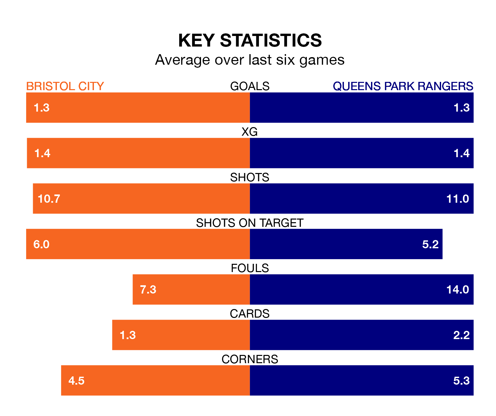

Queens Park Rangers travel to Bristol City on Saturday in EFL Championship.
The visitors come into the game on the back of a defeat in their last match, having lost to Stoke City 1-0 away.
The Robins, meanwhile, won their last match, 3-1 against Southampton, with their goals scored by Robert Dickie, Harry Cornick and Samuel John Bell.
QPR are 22nd in the table after 32 games, of which they have won seven and drawn eight, earning 29 points.
City are 11 places ahead of Rangers in 11th, with 12 wins and eight draws putting them on 44 points.
In the last 10 years, City and QPR have played each other on 18 occasions. City won nine of them, QPR five, and they drew four times.
On average, the Robins scored 1.4 goals and QPR 0.9 in those matches.
Their last meeting was on November 11, when they played out a 0-0 draw.
With 29 goals in 32 games so far this season, the away side are the league's third-lowest scorers with 0.9 goals per game. And they are conceding at an average rate, letting in 44 goals at a rate of 1.4 per game.
The Robins are also below average scorers, with 1.2 goals per game, compared to a league average of 1.4. They have conceded 1.1 goals per game.
The hosts are in mixed form in EFL Championship, with two wins and two draws from their last six games.
And also with two wins and two draws over that period, QPR's form is identical – they have both taken eight points from 18.
Updated: 13:04 (UTC), 16/02/24